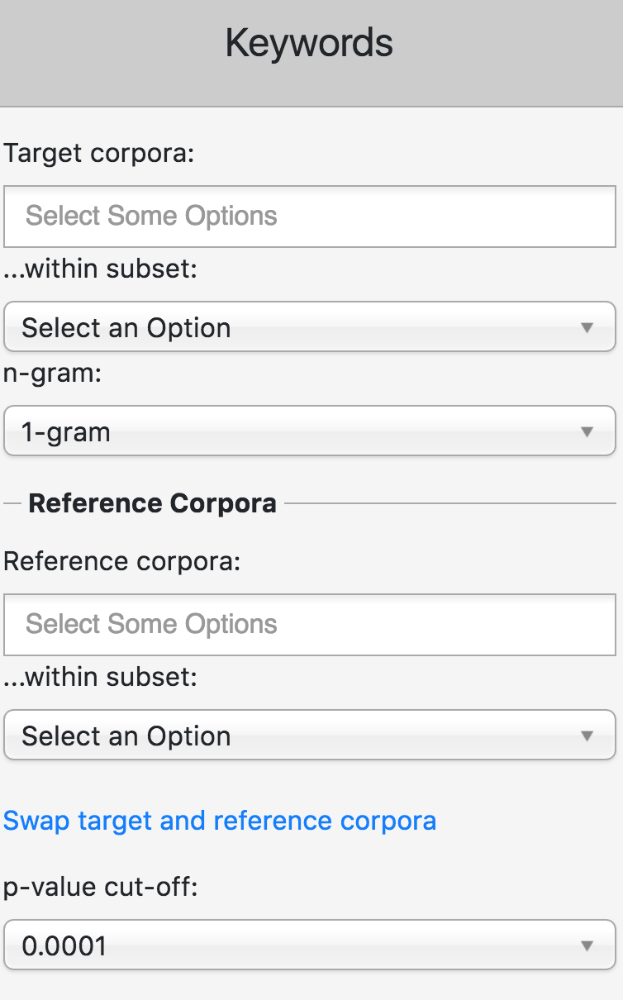
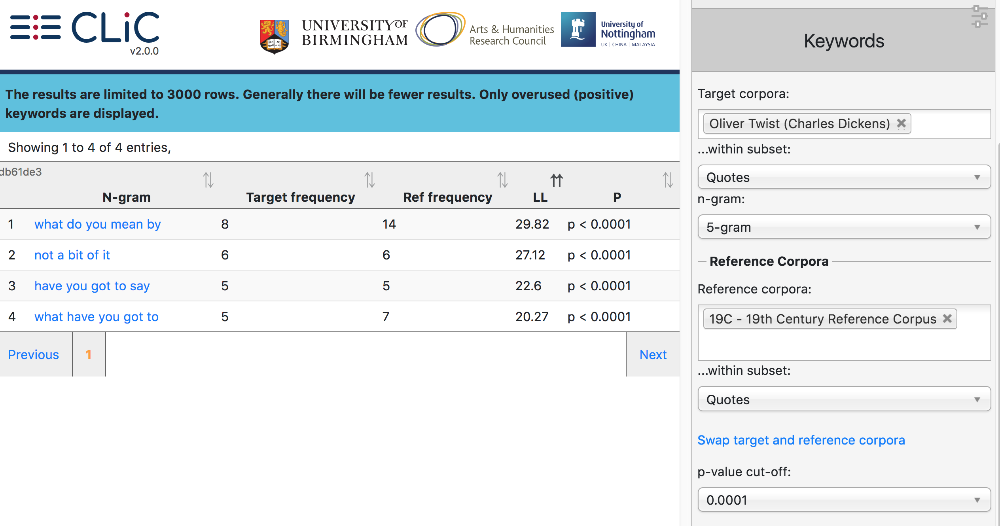

Keywords¶
The keywords tool finds words (and phrases) that are used significantly more often in one corpus compared to another. CLiC incorporates the keyword extraction formula reported by [Rayson_Garside_2000]. Apart from comparing single words, CLiC also allows you to compare clusters. Whereas the cluster tab focuses only on one corpus, the Keywords function can compare cluster lists. You have to make selections for the following options (also see Fig. 42):
‘Target corpora’: Choose the corpus/corpora that you are interested in.
‘within subset’: Specify which subset of the target corpus you want to compare (or simply choose ‘all text’)
‘Reference corpora’: Choose the reference corpus to compare your target corpus to.
‘within subset’: Specify the subset for the reference corpus.
‘n-gram’: Do you want to compare single words (1-grams) or phrases (2-grams up to 7-grams)

Fig. 42 The settings for the keywords tab require you to select two sets of corpora for the keyword comparison – target and reference – and their corresponding subsets¶

Fig. 43 Key 5-word clusters in Oliver Twist ‘quotes’ compared to ‘quotes’ in the 19th Century Reference Corpus¶
Note that you have to select a subset for each of the two corpora or you’ll see the error message: “Please select a subset”. So, for example, when comparing 5-grams in Oliver Twist (quotes) against the 19th Century Reference Corpus (quotes), we retrieve the results displayed in Fig. 43 (for a p-value of 0.0001). The keyword output is by default ordered by the log-likelihood (LL) value, the ‘keyness’ statistic used here (for more details on the calculation, please refer to [Rayson_Garside_2000]).
The frequency threshold of 5 used for the cluster tab is not applied to the keyword tab, so that all frequencies are compared. The keyword output shows the top 3000 results (for most comparisons, you will yield fewer results, though). Moreover, CLiC only generates so-called ‘positive keywords’: those that are overused in the target corpus compared to the reference corpus. CLiC does not generate ‘negative’ or ‘underused’ keywords.